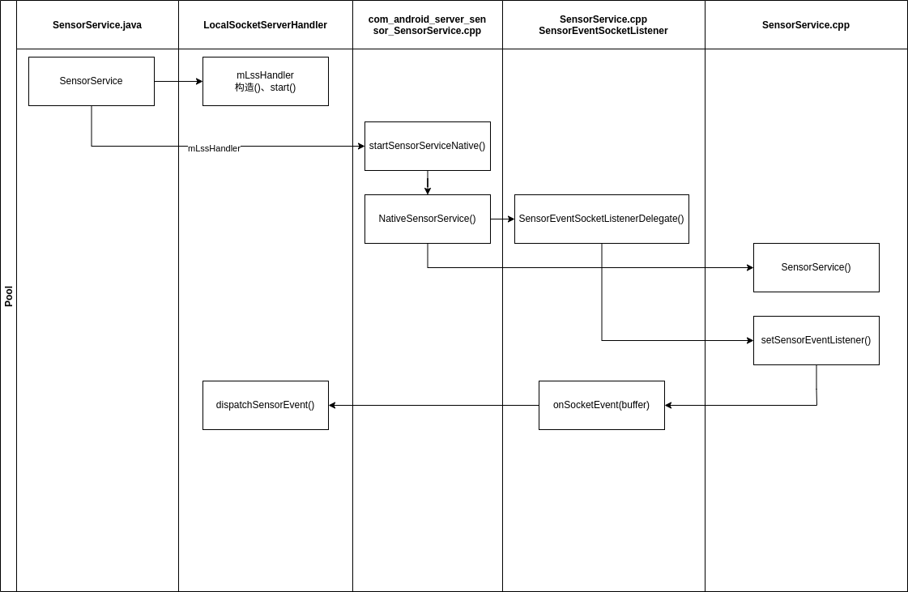
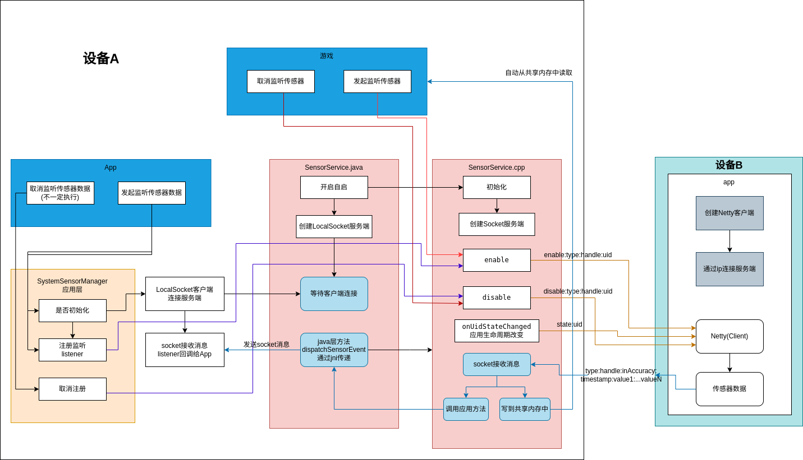

案例
项目简介¶
设备A没有传感器硬件，设备B正常手机，实现设备A数据从设备B中获取
需要用的的库
设备A¶
framework层修改点¶
- frameworks/base/core/java/android/hardware/SystemSensorManager.java
主要添加LocalSocket客户端逻辑，用来接收传感器数据
private Handler mMainHandler;
public SystemSensorManager(Context context, Looper mainLooper) {
// ...
mMainHandler = new Handler(Looper.getMainLooper(), message -> {
try {
//数据形式type:handle:inAccuracy:timestamp:value1...valuen
String msg = (String) message.obj;
String[] split = msg.split(":");
int type = Integer.parseInt(split[0]);
int handle = Integer.parseInt(split[1]);
int inAccuracy = Integer.parseInt(split[2]);
long timestamp = Long.parseLong(split[3]);
int valueSize = split.length - 4;
float[] values = new float[valueSize];
for (int i = 0; i < valueSize; i++) {
values[i] = Float.parseFloat(split[i + 4]);
}
for (SensorEventQueue value : mSensorListeners.values()) {
if (value != null) {
Sensor sensor = mHandleToSensor.get(handle);
if (sensor != null) {
int registerType = sensor.getType();
if (type == registerType) {
value.dispatchSensorEvent(sensor.getHandle(), values, inAccuracy, timestamp);
}
}
}
}
} catch (NumberFormatException e) {
e.printStackTrace();
}
return true;
});
LocalSocketClientHandler lscHandler = new LocalSocketClientHandler();
lscHandler.setMsgListener(msgListener);
lscHandler.start("sensor_socket");
}
private android.hardware.LocalSocketClientHandler.MsgListener msgListener = new LocalSocketClientHandler.MsgListener() {
@Override
public void onMsgReceive(String msg) {
Message message = mMainHandler.obtainMessage();
message.obj = msg;
mMainHandler.sendMessage(message);
}
};
编译模块framework.jar
编译命令make framework-minus-apex
- frameworks/base/services/core/java/com/android/server/sensors/SensorService.java
主要添加LocalSocket服务端逻辑以及注册jni回调类，当cpp层有传感器数据时会调用LocalSocketServerHandler中的dispatchSensorEvent方法来传递数据
private static native long startSensorServiceNative(ProximityActiveListener listener, LocalSocketServerHandler lls);
public SensorService(Context ctx) {
//...
LocalSocketServerHandler mLssHandler = new LocalSocketServerHandler();
mLssHandler.start("sensor_socket");
synchronized (mLock) {
//...
long ptr = startSensorServiceNative(new ProximityListenerDelegate(), mLssHandler);
//...
}
}
同目录添加LocalSocketServerHandler.java和Client.java辅助类，功能是封装LocalSocket的使用，LocalSocketServerHandler中额外添加方法dispatchSensorEvent
// Called from native code.
public void dispatchSensorEvent(String msg) {
send(msg);
}
编译模块services.jar
编译命令make services
native层修改点¶
- frameworks/base/core/jni/android_hardware_SensorManager.cpp
主要是屏蔽直接从底层共享内存中读取逻辑，统一在Java层SystemSensorManager的数据处理
void destroy() {
// 没注册就不需要注销
// mMessageQueue->getLooper()->removeFd( mSensorQueue->getFd() );
}
virtual void onFirstRef() {
LooperCallback::onFirstRef();
// 应用层传感器回调不要从这里回调，而是从LocalSocket回调数据
// mMessageQueue->getLooper()->addFd(mSensorQueue->getFd(), 0,
// ALOOPER_EVENT_INPUT, this, mSensorQueue.get());
}
编译模块libandroid_runtime.so
编译命令make libandroid_runtime
- frameworks/native/services/sensorservice/SensorService.cpp、SensorService.h和Android.bp 主要是创建socket去接收手机端数据
Android.bp
cc_library_shared {
name: "libsensorservice",
srcs: [
//...
"ThreadPool.cpp",
],
//...
}
class ProximityActiveListener : public virtual RefBase {
//...
};
// add start
class SensorEventSocketListener : public virtual RefBase {
public:
virtual void onSocketEvent(char buffer[]) = 0;
};
// add end
//...原生
void uncapRates(userid_t userId);
// add
void startServer(int port);
void receiveClient();
void analysisResponse(char buffer[]);
void sendMsg(const std::string& message);
sp<SensorEventSocketListener> mSensorEventSocketListener;
void SensorService::setSensorEventListener(const sp<SensorEventSocketListener>& callback);
//...
//SensorService.cpp
void SensorService::startServer(int port){
//具体见ServerSocket.cpp
}
void SensorService::sendMsg(const std::string& message){
//具体见ServerSocket.cpp
}
void SensorService::receiveClient(){
//具体见ServerSocket.cpp
}
void SensorService::setSensorEventListener(const sp<SensorEventSocketListener>& callback) {
mSensorEventSocketListener = callback;
}
//解析数据写到BitTube中
void SensorService::analysisResponse(char buffer[]){
if (mSensorEventSocketListener != nullptr) {
// 应用层回调
mSensorEventSocketListener->onSocketEvent(buffer);
}
ConnectionSafeAutolock connLock = mConnectionHolder.lock(mLock);
char* token = strtok(buffer, ":");
if (token == nullptr) {
return;
}
int32_t type = std::strtol(token, nullptr, 10);
token = strtok(nullptr, ":");
if (token == nullptr) {
return;
}
int32_t handle = std::strtol(token, nullptr, 10);
token = strtok(nullptr, ":");
if (token == nullptr) {
return;
}
int8_t accuracy;
char* endptr;
long long tmpAccuracy = std::strtol(token, &endptr, 10);
if (*endptr == '\0' && tmpAccuracy >= std::numeric_limits<int8_t>::min() && tmpAccuracy <= std::numeric_limits<int8_t>::max()) {
accuracy = static_cast<int8_t>(tmpAccuracy);
} else {
accuracy = 0;
ALOGE("Error converting string to int8_t: invalid input or out of range.");
}
token = strtok(nullptr, ":");
if (token == nullptr) {
return;
}
int64_t timestamp = std::strtoll(token, nullptr, 10);
token = strtok(nullptr, ":");
if (token == nullptr) {
return;
}
size_t arraySize = sizeof(mSensorEventBuffer->data) / sizeof(mSensorEventBuffer->data[0]);
for (size_t i = 0; i < arraySize; ++i) {
if (token == nullptr) {
break;
}
mSensorEventTemp->data[i] = std::strtof(token, nullptr);
token = strtok(nullptr, ":");
}
mSensorEventBuffer->type = type;
mSensorEventBuffer->sensor = handle;
sp<SensorInterface> sensor = getSensorInterfaceFromHandle(handle);
mSensorEventBuffer->version = sensor->getSensor().getVersion();
mSensorEventBuffer->timestamp = timestamp;
switch (type) {
case ASENSOR_TYPE_ACCELEROMETER:
mSensorEventBuffer->orientation.x = mSensorEventTemp->data[0];
mSensorEventBuffer->orientation.y = mSensorEventTemp->data[1];
mSensorEventBuffer->orientation.z = mSensorEventTemp->data[2];
mSensorEventBuffer->orientation.status = accuracy;
break;
case ASENSOR_TYPE_MAGNETIC_FIELD:
mSensorEventBuffer->magnetic.x = mSensorEventTemp->data[0];
mSensorEventBuffer->magnetic.y = mSensorEventTemp->data[1];
mSensorEventBuffer->magnetic.z = mSensorEventTemp->data[2];
mSensorEventBuffer->magnetic.status = accuracy;
break;
case SENSOR_TYPE_ORIENTATION:
mSensorEventBuffer->acceleration.x = mSensorEventTemp->data[0];
mSensorEventBuffer->acceleration.y = mSensorEventTemp->data[1];
mSensorEventBuffer->acceleration.z = mSensorEventTemp->data[2];
mSensorEventBuffer->acceleration.status = accuracy;
break;
case ASENSOR_TYPE_GYROSCOPE:
mSensorEventBuffer->gyro.x = mSensorEventTemp->data[0];
mSensorEventBuffer->gyro.y = mSensorEventTemp->data[1];
mSensorEventBuffer->gyro.z = mSensorEventTemp->data[2];
mSensorEventBuffer->gyro.status = accuracy;
break;
case SENSOR_TYPE_LIGHT:
mSensorEventBuffer->light = mSensorEventTemp->data[0];
break;
case SENSOR_TYPE_PRESSURE:
mSensorEventBuffer->pressure = mSensorEventTemp->data[0];
break;
case SENSOR_TYPE_TEMPERATURE:
mSensorEventBuffer->temperature = mSensorEventTemp->data[0];
break;
case SENSOR_TYPE_PROXIMITY:
mSensorEventBuffer->distance = mSensorEventTemp->data[0];
break;
case ASENSOR_TYPE_GRAVITY:
mSensorEventBuffer->orientation.x = mSensorEventTemp->data[0];
mSensorEventBuffer->orientation.y = mSensorEventTemp->data[1];
mSensorEventBuffer->orientation.z = mSensorEventTemp->data[2];
mSensorEventBuffer->orientation.status = accuracy;
break;
case ASENSOR_TYPE_LINEAR_ACCELERATION:
mSensorEventBuffer->acceleration.azimuth = mSensorEventTemp->data[0];
mSensorEventBuffer->acceleration.pitch = mSensorEventTemp->data[1];
mSensorEventBuffer->acceleration.roll = mSensorEventTemp->data[2];
mSensorEventBuffer->acceleration.status = accuracy;
break;
case SENSOR_TYPE_ROTATION_VECTOR:
case SENSOR_TYPE_GEOMAGNETIC_ROTATION_VECTOR:
mSensorEventBuffer->data[0] = mSensorEventTemp->data[0];
mSensorEventBuffer->data[1] = mSensorEventTemp->data[1];
mSensorEventBuffer->data[2] = mSensorEventTemp->data[2];
mSensorEventBuffer->data[3] = mSensorEventTemp->data[3];
mSensorEventBuffer->data[4] = mSensorEventTemp->data[4];
break;
case SENSOR_TYPE_RELATIVE_HUMIDITY:
mSensorEventBuffer->relative_humidity = mSensorEventTemp->data[0];
break;
case SENSOR_TYPE_GAME_ROTATION_VECTOR: {
mSensorEventBuffer->data[0] = mSensorEventTemp->data[0];
mSensorEventBuffer->data[1] = mSensorEventTemp->data[1];
mSensorEventBuffer->data[2] = mSensorEventTemp->data[2];
mSensorEventBuffer->data[3] = mSensorEventTemp->data[3];
break;
}
case SENSOR_TYPE_GYROSCOPE_UNCALIBRATED:
mSensorEventBuffer->uncalibrated_gyro.x_bias = mSensorEventTemp->data[0];
mSensorEventBuffer->uncalibrated_gyro.y_bias = mSensorEventTemp->data[1];
mSensorEventBuffer->uncalibrated_gyro.z_bias = mSensorEventTemp->data[2];;
mSensorEventBuffer->uncalibrated_gyro.x_uncalib = mSensorEventTemp->data[0];
mSensorEventBuffer->uncalibrated_gyro.y_uncalib = mSensorEventTemp->data[1];
mSensorEventBuffer->uncalibrated_gyro.z_uncalib = mSensorEventTemp->data[2];
break;
case SENSOR_TYPE_MAGNETIC_FIELD_UNCALIBRATED:
mSensorEventBuffer->uncalibrated_magnetic.x_bias = mSensorEventTemp->data[0];
mSensorEventBuffer->uncalibrated_magnetic.y_bias = mSensorEventTemp->data[1];
mSensorEventBuffer->uncalibrated_magnetic.z_bias = mSensorEventTemp->data[2];;
mSensorEventBuffer->uncalibrated_magnetic.x_uncalib = mSensorEventTemp->data[0];
mSensorEventBuffer->uncalibrated_magnetic.y_uncalib = mSensorEventTemp->data[1];
mSensorEventBuffer->uncalibrated_magnetic.z_uncalib = mSensorEventTemp->data[2];
break;
case SENSOR_TYPE_ACCELEROMETER_UNCALIBRATED:
mSensorEventBuffer->uncalibrated_accelerometer.x_bias = mSensorEventTemp->data[0];
mSensorEventBuffer->uncalibrated_accelerometer.y_bias = mSensorEventTemp->data[1];
mSensorEventBuffer->uncalibrated_accelerometer.z_bias = mSensorEventTemp->data[2];;
mSensorEventBuffer->uncalibrated_accelerometer.x_uncalib = mSensorEventTemp->data[0];
mSensorEventBuffer->uncalibrated_accelerometer.y_uncalib = mSensorEventTemp->data[1];
mSensorEventBuffer->uncalibrated_accelerometer.z_uncalib = mSensorEventTemp->data[2];
break;
default:
memcpy(mSensorEventBuffer->data,mSensorEventTemp->data,16);
break;
}
const std::vector<sp<SensorEventConnection>> activeConnections = connLock.getActiveConnections();
for (const sp<SensorEventConnection>& connection : activeConnections) {
SensorEventQueue::write(connection->mChannel,
reinterpret_cast<ASensorEvent const*>(mSensorEventBuffer), 1);
}
}
//程序进程存活状态监听回调，发送到手机端，数据形式state:uid:active(idle)
void SensorService::onUidStateChanged(uid_t uid, UidState state) {
std::string result = "state:" + std::to_string(uid) + ":" + (state == UID_STATE_ACTIVE ? "active" : "idle") + "\n";
sendMsg(result);
//...
}
// 监听某个传感器时会调用
status_t SensorService::enable(const sp<SensorEventConnection>& connection,
int handle, nsecs_t samplingPeriodNs, nsecs_t maxBatchReportLatencyNs, int reservedFlags,
const String16& opPackageName) {
//...
sp<SensorInterface> sensor = getSensorInterfaceFromHandle(handle);
if (sensor == nullptr ||
!canAccessSensor(sensor->getSensor(), "Tried enabling", opPackageName)) {
return BAD_VALUE;
}
//add start
std::string result = "enable:" + std::to_string(sensor->getSensor().getType())
+ ":" + std::to_string(handle) + ":" + std::to_string(connection->getUid()) + "\n";
sendMsg(result);
//add end
//...
//add start
if (client_sockfd != -1) {
return NO_ERROR;
}
//add end
status_t err = sensor->batch(connection.get(), handle, 0, samplingPeriodNs,
maxBatchReportLatencyNs);
//...
}
status_t SensorService::disable(const sp<SensorEventConnection>& connection, int handle) {
//...
Mutex::Autolock _l(mLock);
status_t err = cleanupWithoutDisableLocked(connection, handle);
if (err == NO_ERROR) {
sp<SensorInterface> sensor = getSensorInterfaceFromHandle(handle);
//add start
std::string result = "disable:" + std::to_string(sensor->getSensor().getType())
+ ":" + std::to_string(connection->getUid()) + "\n";
sendMsg(result);
if (client_sockfd != -1) {
return NO_ERROR;
}
//add end
err = sensor != nullptr ? sensor->activate(connection.get(), false) : status_t(BAD_VALUE);
}
//...
}
编译模块libsensorservice.so
编译命令make libsensorservice
- frameworks/base/services/core/jni/com_android_server_sensor_SensorService.cpp
主要是建立SensorService.java和SensorService.cpp的通路
#define LOCAL_SOCKET_CLASS \
"com/android/server/sensors/LocalSocketServerHandler"
namespace android {
//...
static jmethodID sMethodIdDispatchSensorEvent;
class NativeSensorService {
//modify
NativeSensorService(JNIEnv* env, jobject listener, jobject ssl);
//...
sp<ProximityActiveListenerDelegate> mProximityActiveListenerDelegate;
//add start
class SensorEventSocketListenerDelegate : public SensorService::SensorEventSocketListener {
public:
SensorEventSocketListenerDelegate(JNIEnv* env, jobject ssl);
~SensorEventSocketListenerDelegate();
void onSocketEvent(char buffer[]) override;
private:
jobject mHandle;
};
sp<SensorEventSocketListenerDelegate> mSensorEventSocketListenerDelegate;
//add end
};
NativeSensorService::SensorEventSocketListenerDelegate::SensorEventSocketListenerDelegate(
JNIEnv *env, jobject ssl): mHandle(env->NewGlobalRef(ssl)) {}
NativeSensorService::SensorEventSocketListenerDelegate::~SensorEventSocketListenerDelegate() {
AndroidRuntime::getJNIEnv()->DeleteGlobalRef(mHandle);
}
//调用java层的LocalServerHandler中的dispatchSensorEvent方法
void NativeSensorService::SensorEventSocketListenerDelegate::onSocketEvent(char *buffer) {
auto jniEnv = GetOrAttachJNIEnvironment(sJvm);
if (sMethodIdDispatchSensorEvent != nullptr) {
jstring jMsg = jniEnv->NewStringUTF(buffer);
jniEnv->CallVoidMethod(mHandle, sMethodIdDispatchSensorEvent, jMsg);
jniEnv->DeleteLocalRef(jMsg);
}
}
NativeSensorService::NativeSensorService(JNIEnv* env, jobject listener, jobject ssl)
: mProximityActiveListenerDelegate(new ProximityActiveListenerDelegate(env, listener)),
mSensorEventSocketListenerDelegate(new SensorEventSocketListenerDelegate(env, ssl)) {
//...
mService = new SensorService();
//add
mService->setSensorEventListener(mSensorEventSocketListenerDelegate);
//...
}
//modify
static jlong startSensorServiceNative(JNIEnv* env, jclass, jobject listener, jobject ssl) {
NativeSensorService* service = new NativeSensorService(env, listener, ssl);
return reinterpret_cast<jlong>(service);
}
static const JNINativeMethod methods[] = {
{
// modify
"startSensorServiceNative", "(L" PROXIMITY_ACTIVE_CLASS ";L" LOCAL_SOCKET_CLASS ";)J",
reinterpret_cast<void*>(startSensorServiceNative)
},
//...
};
int register_android_server_sensor_SensorService(JavaVM* vm, JNIEnv* env) {
//...
jclass sensorServiceClass = FindClassOrDie(env, LOCAL_SOCKET_CLASS);
sMethodIdDispatchSensorEvent = GetMethodIDOrDie(env, sensorServiceClass, "dispatchSensorEvent", "(Ljava/lang/String;)V");
//...
}
}; // namespace android

编译模块libandroid_servers.so
编译命令make libandroid_servers
设备B¶
app层: netty_client项目，主要是通过netty将传感器数据传递到native层SensorService.cpp
处理收到的指令
override fun messageReceived(msg: String) {
lifecycleScope.launch {
val cmd = msg.split(":")
try {
val flag = cmd[0]
if ("enable" == flag) {
val type = cmd[1].toInt()
val uid = cmd[3].toInt()
val handle = cmd[2]
val listener = typeToListener(type, handle)
registerSensorListener(type, listener)
sensorCacheManager.enable(type, uid)
} else if ("disable" == flag) {
val type = cmd[1].toInt()
val uid = cmd[2].toInt()
sensorCacheManager.disable(type, uid)
} else if ("state" == flag) {
val active = cmd[2] == "active"
if (!active) {
val uid = cmd[1].toInt()
sensorCacheManager.state(uid)
}
}
} catch (e: Exception) {
e.printStackTrace()
}
}
}
private fun typeToListener(type: Int, handle: String) = when (type) {
Sensor.TYPE_ACCELEROMETER -> {
accelerometerListener.apply { this.handle = handle }
}
Sensor.TYPE_MAGNETIC_FIELD -> {
magneticFieldListener.apply { this.handle = handle }
}
Sensor.TYPE_ORIENTATION -> {
orientationListener.apply { this.handle = handle }
}
Sensor.TYPE_GYROSCOPE -> {
gyroscopeListener.apply { this.handle = handle }
}
Sensor.TYPE_LIGHT -> {
lightListener.apply { this.handle = handle }
}
Sensor.TYPE_PRESSURE -> {
pressureListener.apply { this.handle = handle }
}
Sensor.TYPE_TEMPERATURE -> {
temperatureListener.apply { this.handle = handle }
}
Sensor.TYPE_PROXIMITY -> {
proximityListener.apply { this.handle = handle }
}
Sensor.TYPE_GRAVITY -> {
gravityListener.apply { this.handle = handle }
}
Sensor.TYPE_LINEAR_ACCELERATION -> {
linearAccelerationListener.apply { this.handle = handle }
}
Sensor.TYPE_ROTATION_VECTOR -> {
rotationVectorListener.apply { this.handle = handle }
}
Sensor.TYPE_GAME_ROTATION_VECTOR -> {
gameRotationVectorListener.apply { this.handle = handle }
}
Sensor.TYPE_GEOMAGNETIC_ROTATION_VECTOR -> {
geomagneticRotationVectorListener.apply { this.handle = handle }
}
else -> null
}
private val accelerometerListener by lazy {
object : SensorEventListener {
var handle: String = ""
override fun onSensorChanged(event: SensorEvent) {
sendSensorData(event, handle)
}
override fun onAccuracyChanged(sensor: Sensor, accuracy: Int) {
Log.d(TAG, "onAccuracyChanged: type ${sensor.type},accuracy $accuracy")
}
}
}
private fun registerSensorListener(type: Int, listener: SensorEventListener?) {
if (listener == null) {
Log.e(TAG, "sensor listener is null")
return
}
if (sensorCacheManager.hasEnable(type)) {
Log.e(TAG, "sensor has register")
return
}
sensorManager.registerListener(
listener,
sensorManager.getDefaultSensor(type),
SensorManager.SENSOR_DELAY_NORMAL
)
Log.e(TAG, "sensor register: $type")
}
private fun unRegisterSensorListener(type: Int, listener: SensorEventListener?) {
if (listener == null) {
Log.e(TAG, "sensor listener is null")
return
}
if (sensorCacheManager.hasEnable(type)) {
Log.e(TAG, "sensor has no register")
return
}
sensorManager.unregisterListener(listener)
Log.e(TAG, "sensor unregister: $type")
}
private fun sendSensorData(event: SensorEvent, handle: String) {
if (handle.isEmpty()) {
Log.d(TAG, "sendSensorData: handle is null")
return
}
val builder = StringBuilder()
builder.append(event.sensor.type).append(":")
.append(handle).append(":")
.append(event.accuracy).append(":")
.append(event.timestamp)
event.values.forEach {
builder.append(":").append(it)
}
SensorClientHandler.sendMsg(builder.toString())
}
整体流程¶
- 设备A开机启动SensorService系统服务开启(原生逻辑)
- 手机端启动Netty客户端并连接
- 设备A三方应用或者游戏监听传感器
- 设备A如果是应用fw(SystemSensorManager)被创建并通过LocalSocket连接到SensorService中的服务端，等待消息
- 设备A上触发传感器无论是应用还是游戏都会调用到SensorService中的enable/disable函数，通过Socket向手机端发送消息，携带传感器类型信息
- SensorService收到手机的数据，解析后将数据传回应用和游戏
- 如果应用或游戏退出onUidStateChanged，向手机发送uid的程序消息，手机关闭对应传感器数据
方案整体流程图¶
